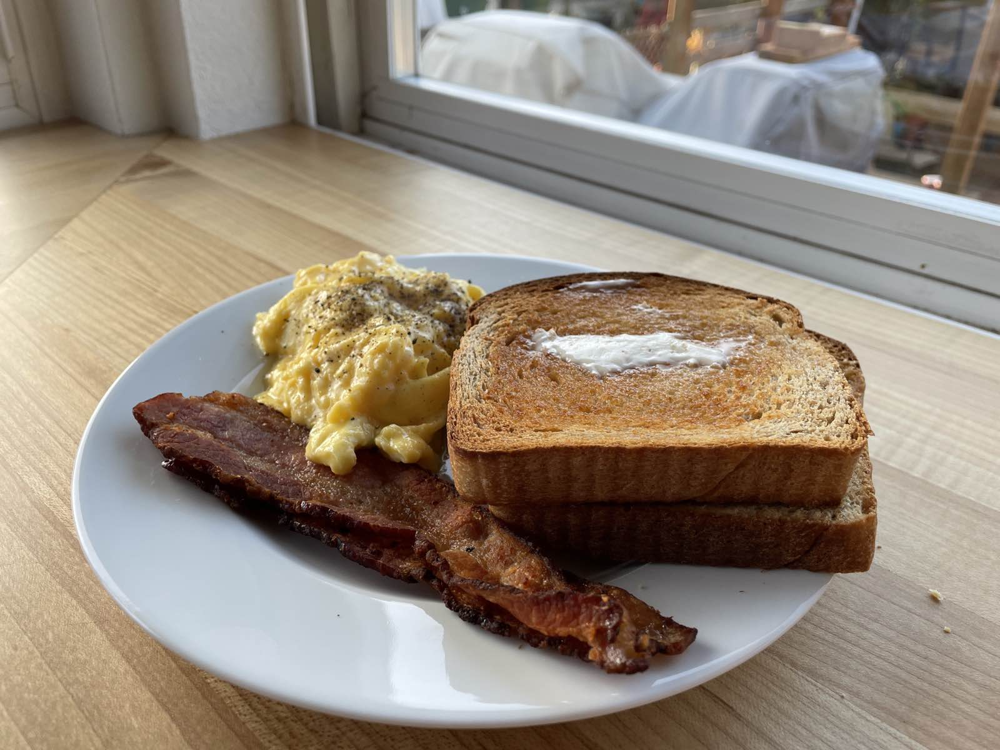
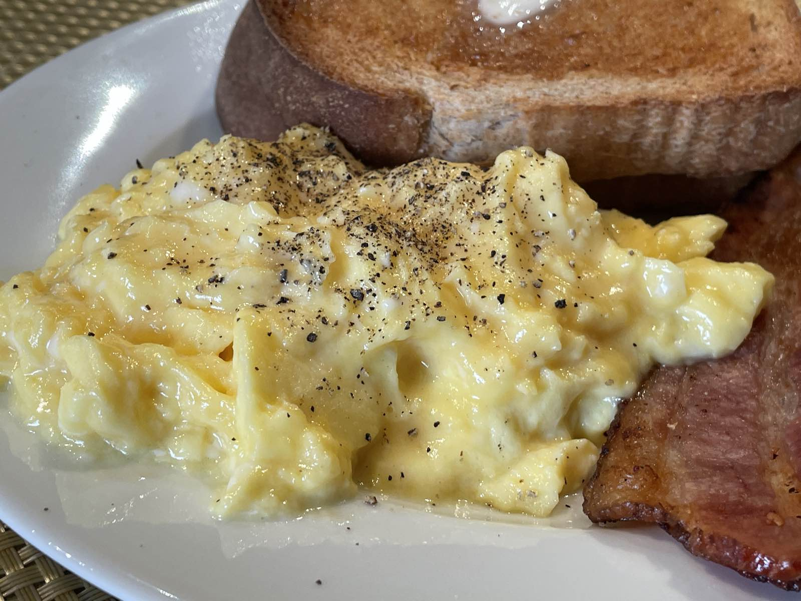

Eggs, Bacon & Toast
There are only a few things in this world that I prefer to make if I’m going to eat it and scrambled eggs are probably at the top of that list, especially since I moved to Seattle. Pre-pandemic it was difficult to find a place that made scrambled eggs that weren’t just downright overcooked or like, god forbid, fucking bland. I have no clue what people do to make an egg taste bland, but like, it happens. So, most of the time I get them over easy since it’s much harder to fuck that one up. Plus, like who doesn’t love a runny yolk? Since this pandemic started though they’re strictly a make-at-home or at a quarantine friends house unless they’re wrapped in a burrito, eggs do not travel.

Well, the other morning I entered the Twilight Zone when my son asked me if I could make him eggs, bacon and toast for breakfast because he didn’t want his standard frozen shitty waffle. (No kidding, out of all the food he could eat in the morning, most of the time its a chocolately chip waffle. Note that it’s not a chocolate chip waffle. No, that would be too fucking far since they’d have to actually put, you know, chocolate in the chips.) I was more than happy to oblige this ask, so I made eggs, bacon and toast.

There are a lot of ways to make creamy scrambled eggs, and there are a lot of ways to make fluffy scrambled eggs. This method tends to fall in the middle creamy and moist eggs, but with some decent curd formation and a bit of lightness in them. Also it really doesn’t work with less than 4 eggs since there’s not enough mass to easily control the heat. So, get your eggs, crack ‘em, add a splash of milk or cream or nothing and a good pinch of salt and beat them until they’re homogenous. These should ideally sit for about 15 minutes, but who the fuck has that amount of time in the morning to wait for eggs? Not this chunky lover, for sure.
So, after you’ve done that, take out a non-stick pan and put it over medium low heat with a good pat of butter in it. (No, really, you’ll need a non-stick pan for this or they get stuck. This is literally the only thing I make in my non-stick pan.) When the butter melts and just starts to foam, add the eggs and let them sit for a minute. With a rubber spatula, drag it through the eggs and gather up somd curds, and then slowly stir the mixture. What we’re trying to do here is get the eggs to start to come up to temp and thicken, but also generate a loose mixture of coagulated proteins and trapped in this thickened egg gel. The first minute or so shouldn’t create any thick curds yet, but every like 20 seconds, swipe through the mixture and gently stir. As it starts to thicken more you’ll start getting more solid curds. This is the key time to start stirring more frequently to keep the curd size small, like every 5-7 seconds. When the mixture is pretty thick, but still shiny (e.g. dragging the spatula through it leaves a distinct trail), it’s time to turn off the heat. Stir them in the hot pan for another 30 seconds or so, and then put them on a plate. They should look a little “too” wet, but be a thick mass that shouldn’t weep any liquid. Depending on your stove, the tempeture of your eggs, if you used milk or cream, this might take a little longer or shorter, so the trick is to use your eyes. Don’t forget to cook your bacon and toast before you make your eggs because if your eggs get cold you might as well just fucking give up and go back to bed.
He liked these so much he asked me to make him bacon and eggs again the next morning. I feel like a real winner.